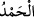

Rabbim hakkı için o, mutlaka size gelecektir. Göklerde ve yerde zerre miktarı bir
şey bile O’ndan gizli kalmaz. Bundan daha küçük ve daha büyüğü de şüphesiz,
apaçık kitaptadır (yazılıdır).
4. Allah, inanıp iyi işler yapanları mükâfatlandırmak için (her şeyi açık bir kitapta
tesbit etmiştir). Onlar için büyük bir mağfiret ve güzel bir rızık vardır.
5. Âyetlerimizi hükümsüz bırakmak için yarışırcasına uğraşanlar için de, en
kötüsünden, elem verici bir azap vardır.
6. Kendilerine ilim verilenler, Rabbinden sana indirilenin (Kur’an’ın) gerçek
olduğunu bilir; onun, mutlak galip ve övgüye lâyık olan (Allah’ın) yoluna ilettiğini
görürler.
7. Kâfir olanlar (kendi aralarında) şöyle dediler: Çürüyüp paramparça olduğunuz
vakit yeniden dirileceğinizi söyleyerek haber veren kişiyi gösterelim mi?
8. “Acaba o, yalan yere Allah’a iftira mı etmiştir? Yoksa onda delilik mi var?”
(dediler). Hayır! Âhirete inanmayanlar azaptadırlar ve derin bir sapıklık
içindedirler.
9. Onlar, gökte ve yerde önlerine ve arkalarına bakmıyorlar mı? Dilesek onları
yere batırırız, ya da üzerlerine gökten parçalar düşürürüz. Şüphesiz bunda
(Rabbine) yönelen her kul için bir ibret vardır.
“Hamd, göklerde ve yerde bulunanların hepsinin sahibi olan Allah’a mahsustur.”
Öyle ki, göklerde ve yerde olan bütün varlıklar, herşey yaratma, mülkiyet, var etme, yok
etme, diriltme ve öldürme bakımından yalnız Allah’a âittir. Öyle ise hamd de başkasına
değil yalnız Allah’a döner. Yaratılmışlardan mâlik denilen herkes, gerçekte Allah’ın
memlûkü/kuludur. Zenciye kâfur[1] denilmekle zencinin rengi değişmez.
“__WORD__deki elif-lam cinsi istiğrâk içindir. “__WORD__”deki lâm, temlik ve ihtisas içindir. Yâni,
her hamd edenden sâdır olup meydana gelen bütün medih, övgü ve şükürlerin hepsi
Allah’ın mülkü olup yalnız ona özeldir. Bunda hiç kimsenin ortaklığı yoktur. Zira
yaratan ve her şeye mâlik olan O’dur.
Burada murad edilen, Allah’ın dünyevî nimetlerine hamddir. Çünkü gökler, yer ve
onlarda olanlar hep bizim faydalanmamız için yaratılmıştır. Onların hepsi hem dînî hem
dünyevî bakımdan nimettir. Burada kendisi için Allah’a hamd edilen nimetin dünyada
oluşunun zikriyle yetinilmiş, fakat hamdin dünyada olduğundan bahsedilmemiştir. Başka
bir yerde ise bu durum açıkça beyan edilmiş ve şöyle buyrulmuştur: “Önünde de
(dünyada) sonunda da (âhirette) hamd O’nundur, hüküm O’nundur ve ancak O’na
döndürüleceksiniz.” (el-Kasas, 28/70) “__WORD__ (hamd Allah’a mahsustur) sözü her ne
kadar Allah’ın bizzat kendini hamd etmesi ise de aynı zamanda kullara Allah’a nasıl
hamd edeceklerini öğretmektir.